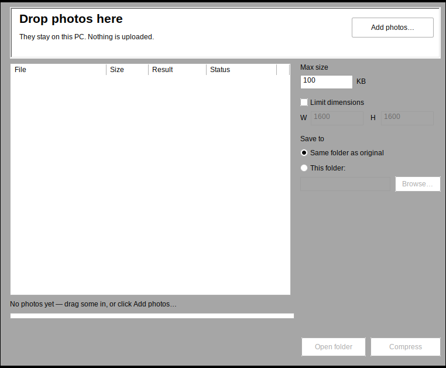

Compress a photo to the limit. Without uploading it.
The form says “photo must be under 100 KB”. Your photo isn’t. Every free tool that fixes it
wants you to upload an ID photo to a stranger’s server. Kilobyt is a small Windows app that does it
on your own machine — and guarantees the result.
v1.1.1 · 583 KB (599,040 bytes) · Windows 10/11 · x64 · no installer · no runtime needed · unsigned (SmartScreen will warn)

Real capture of the shipped binary, running under Wine. Windows CI runs its -selftest before every release.
4.2 MB→98 KBat or under your limit, or no file at all
What it actually guarantees
Exact byte limit
Ask for 100 KB, get ≤ 100,000 bytes. The written file’s length is re-read from disk before the app
says “done” — it never reports success on a file that misses.
Pixel limit too
“600 × 600 max” means that. It shrinks to fit, keeps the aspect ratio, and never upscales a photo
that is already small enough.
Honest failure
If 20 KB is impossible for a 12 MP photo, it writes nothing and tells you the smallest size that
is achievable. A file that quietly misses is worse than no file.
Metadata stripped
EXIF, GPS coordinates, camera serial, timestamps, XMP, IPTC and comments are removed. Rotation is
baked into the pixels, so the photo stays upright.
Batch
Drop 40 photos, one limit, per-file status. One unreadable file never aborts the run.
No network code
No update check, no telemetry, no crash reporting, no “share”. The binary has no network calls to
make. Your photos are read and written locally.
What it won’t do
No cropping or exact W × H output — fit-within only, aspect preserved.
No PNG/WebP output, no HEIC/TIFF/RAW input. JPEG in (and PNG/BMP in), JPEG out.
No PDF tools, no installer, no auto-update, no remembered settings.
The same value is published in
SHA256SUMS.txt
on the release page, written by the CI job that built the exe. If it does not match, do not run the file.
Verify the code
61 engine tests (compression search, resampling, EXIF, naming, error codes) run on Linux and Windows CI.
Windows CI runs the compiled kilobyt.exe -selftest — real encoder, on-disk size invariant, EXIF removal, determinism.
Source is MIT and builds with one command; the exe is 583 KB because nothing is bundled but the app.
The exe is unsigned. Windows SmartScreen will show “Windows protected your PC” on first run —
that is expected, not a bug. Choose More info → Run anyway, or check the hash first, or build
it from source. Code signing costs money and this project has no certificate.
Questions people actually ask
Why is the exe unsigned? There is no code-signing certificate — a recurring cost this project
does not carry. SmartScreen warns once; verify the SHA-256 or build from source instead of trusting it.
Does “under 100 KB” really mean under 100 KB? Yes, measured on the written file: ≤ 100,000 bytes,
re-read from disk before the app says done. It cannot promise a particular portal accepts the upload —
portals add their own rules, which is why there are no presets.
My iPhone photo is HEIC. Not supported: HEIC needs an HEVC decoder that cannot be bundled in an
MIT binary. Export to JPEG first, then run Kilobyt.
Can it output exactly 600×600? No — it fits within the box and keeps the aspect ratio, so 4:3
becomes 600×450. Cropping would be a guess about what to cut.